AI Academy · Level 2 · Grade 7 · Week 27 · Student lesson
Predictive vs Generative
Learn to understand, design, build, test and explain AI systems responsibly.
Project: Transparent Book Recommender
Before you start
AI-1 Week 25: distinguish inventing, finding and calculating.
Plan time to read, investigate and explain. Keep predictions separate from observations.
Student lesson · 1 of 14
Your mission
Your learning target
I can distinguish discriminative prediction from generation by inspecting the requested output.
I can calculate an empirical next-token distribution from counted continuations.
I can separate next-token fit from factual support and downstream usefulness.
Remember before reading
Close your notes first. A rough first answer helps us choose the right starting point; it is not a score for your ability.
Without opening the old lesson, explain one key idea from Image and Voice Pipelines. Give an example and a mistake that the idea helps you avoid.
Without opening the old lesson, explain one key idea from Feedback Loops. Give an example and a mistake that the idea helps you avoid.
Without opening the old lesson, explain one key idea from Similarity by Selected Traits. Give an example and a mistake that the idea helps you avoid.
After trying, check the relevant lesson or ask your teacher. Change the part of your explanation that the evidence shows was wrong.
Week 27: Predictive vs Generative
Predictive systems select a target; generative systems construct new output.
THINKER MISSION
Match problems to classifier, predictor, or generator.
Thinker name and date:
Readiness for the connected explanation
What is the difference between a model prediction and evidence that a statement is true?
This week’s end goal
By the end, I can distinguish a generated continuation from a prediction checked against the world.
Student lesson · 2 of 14
Notice the evidence
PICTURE STORY
Notice → Predict → Explain
Begin with visible evidence. Do not explain more than the picture and information support.
MYSTERY
The learners must use predictive vs generative to solve a problem. What information do they have? What decision or calculation do they make? What would count as evidence that it worked?
Three observations (what you can point to):
My prediction and the clue supporting it:
A closer explanation
A classifier might map a message to the label request or report. A text generator instead produces a sequence, predicting a distribution over the next token given a prefix. Both make predictions, but the training targets and permitted outputs differ. One application can combine generation with a classifier, retrieval and human approval. Calling a whole product “generative” does not describe every component.
The objective defines what training attempts to fit. Next-token fit rewards matching observed continuations; it does not directly certify that an answer is true, well sourced or permitted. A fluent completion is still an output to evaluate against the task.
Student lesson · 3 of 14
See how it works
VISUAL MECHANISM
Input → Process → Output
Trace the information. At each stage, ask what changed and how you could test it.
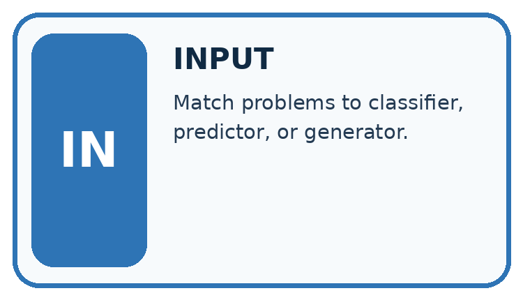
↓
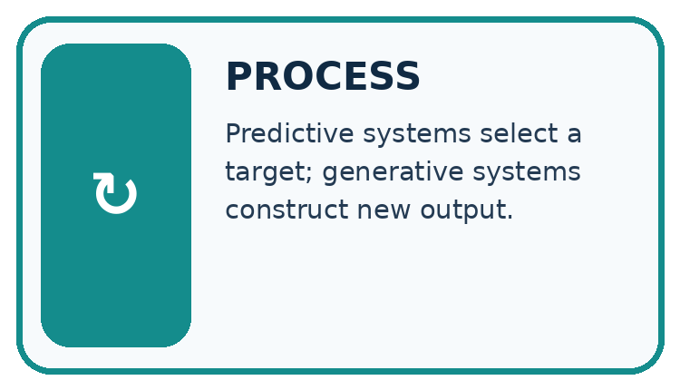
↓
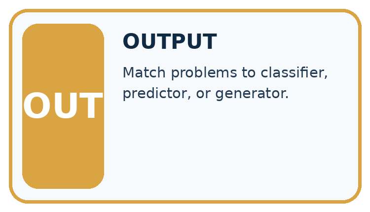
Which stage could fail even when the other two are correct? Explain:
A closer explanation
| Prefix | Continuation | Count |
|---|---|---|
| The marker is | red | 6 |
| The marker is | blue | 3 |
| The marker is | green | 1 |
There are ten observed continuations. The empirical probabilities are red 6/10 = 0.6, blue 3/10 = 0.3, green 1/10 = 0.1. They are nonnegative and sum to 1. A simple frequentist classroom model uses these relative counts as its next-token distribution. These probabilities describe the supplied corpus counts, not the current colour of any actual marker.
Keep the evidence roles separate
Connect the picture and the explanation
Point to the input, the deciding step and the result in this week’s visual. Explain the same step in ordinary words. A picture helps when you can say what each part represents.
Student lesson · 4 of 14
Compare the cases
CASE GALLERY
Four Tests, Four Kinds of Evidence
A system is not understood until it survives more than one comfortable example.


NORMAL CASE: predict and name evidence. BOUNDARY CASE: predict and name evidence.


MISSING INFORMATION: predict and name evidence. TRANSFER CASE: predict and name evidence.
Which case is most likely to reveal a hidden assumption? Why?
Change one thing in the pictured case
Change: Change the training table to full 2, empty 7, unknown 1.
Prediction: Greedy output becomes empty with probability 0.7.
Reason: The continuation distribution changed; the independently observed box has not changed.
Student lesson · 5 of 14
Words that unlock the idea
VOCABULARY LAB
Words You Can Use to Reason
A definition matters when you can recognize the idea, use it, and contrast it with a near-miss.
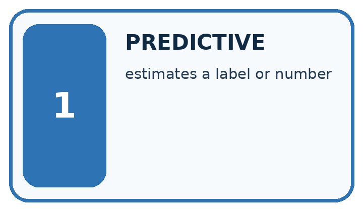
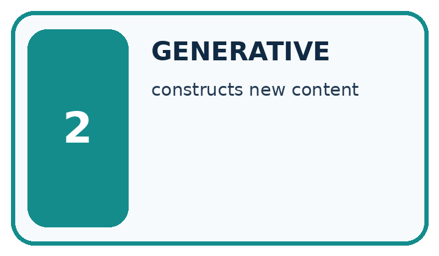
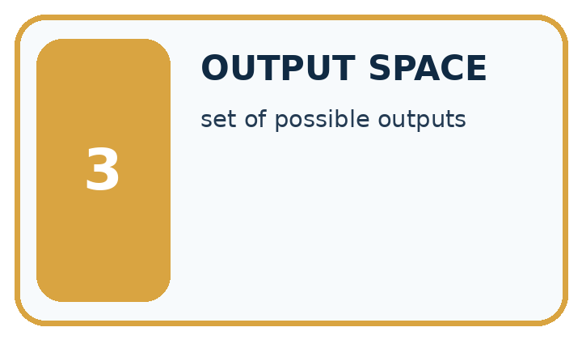
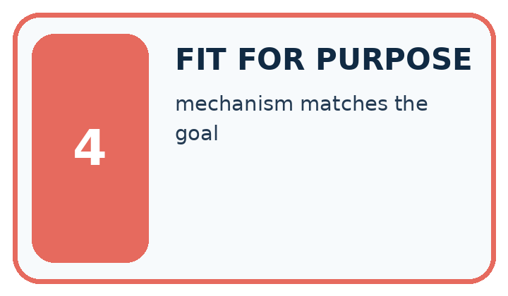
| Word | My own example | Not this / boundary |
|---|---|---|
| predictive | Estimating a target from supplied inputs. | |
| generative | Producing new content from learned patterns and supplied conditions. | |
| output space | The set or range of outputs a system can produce for a task. | |
| fit for purpose | Suitable for the stated users, task, conditions and consequences. |
Words used in the closer explanation
| Word | Meaning |
|---|---|
| Generative objective | A training aim concerned with producing or modelling possible outputs |
| Discriminative objective | A training aim mapping inputs to a specified target such as a label |
| Conditional distribution | Probabilities for alternatives given stated information |
| Autoregressive generation | Producing a sequence one next item at a time using preceding items |
Student lesson · 6 of 14
Follow a worked example
WORKED EVIDENCE
Reason Step by Step
Predict first. Then check each step. A correct answer without visible reasoning is incomplete evidence.
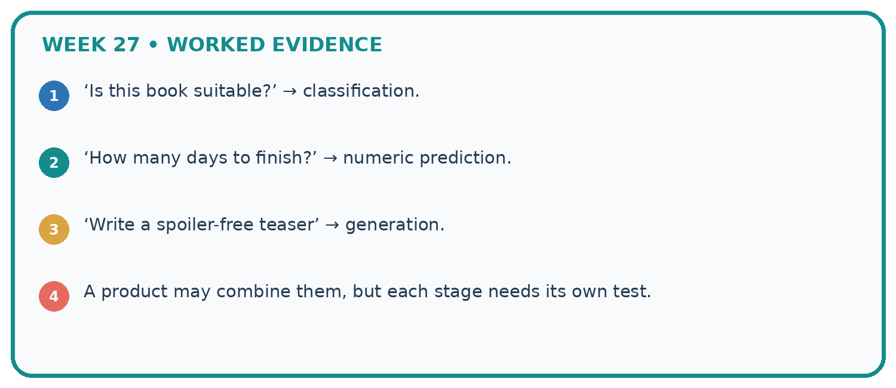
1. ‘Is this book suitable?’ → classification.
2. ‘How many days to finish?’ → numeric prediction.
3. ‘Write a spoiler-free teaser’ → generation.
4. A product may combine them, but each stage needs its own test.
Recalculate, retrace, or restate the reasoning in your own representation:
CHECK Did the evidence answer the exact question? Did the total, path, or source record stay consistent?
A closer explanation
After producing red, the next step conditions on the expanded prefix “The marker is red”. A second table might give an end token probability 0.8 and the token today probability 0.2. A generated sequence can stop at the end token or continue. Do not reuse the first-step table unchanged after adding a token unless the model explicitly ignores the new prefix.
A separate classifier can return red as a label from an image; that is a different input and target from continuing text. A downstream evaluation asks whether the system correctly reports the current marker. It must include ground truth or sources and appropriate failure handling, not just count plausible phrases.
Learn from the worked case
Cover the result before checking it. Say what is given, choose the procedure, and follow one step at a time. Then uncover the result and explain your first mismatch. Ask why a step is allowed, not only what number it produces.
A pictorial worked case: Predictive vs Generative
A fictional toy generator predicts the next word after “The box is”.
The facts we will use
Observed training continuations: full 6, empty 3, unknown 1.
Use counts divided by total 10. The current physical box is separately checked and found empty.
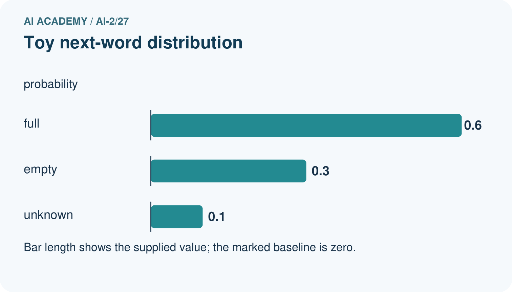
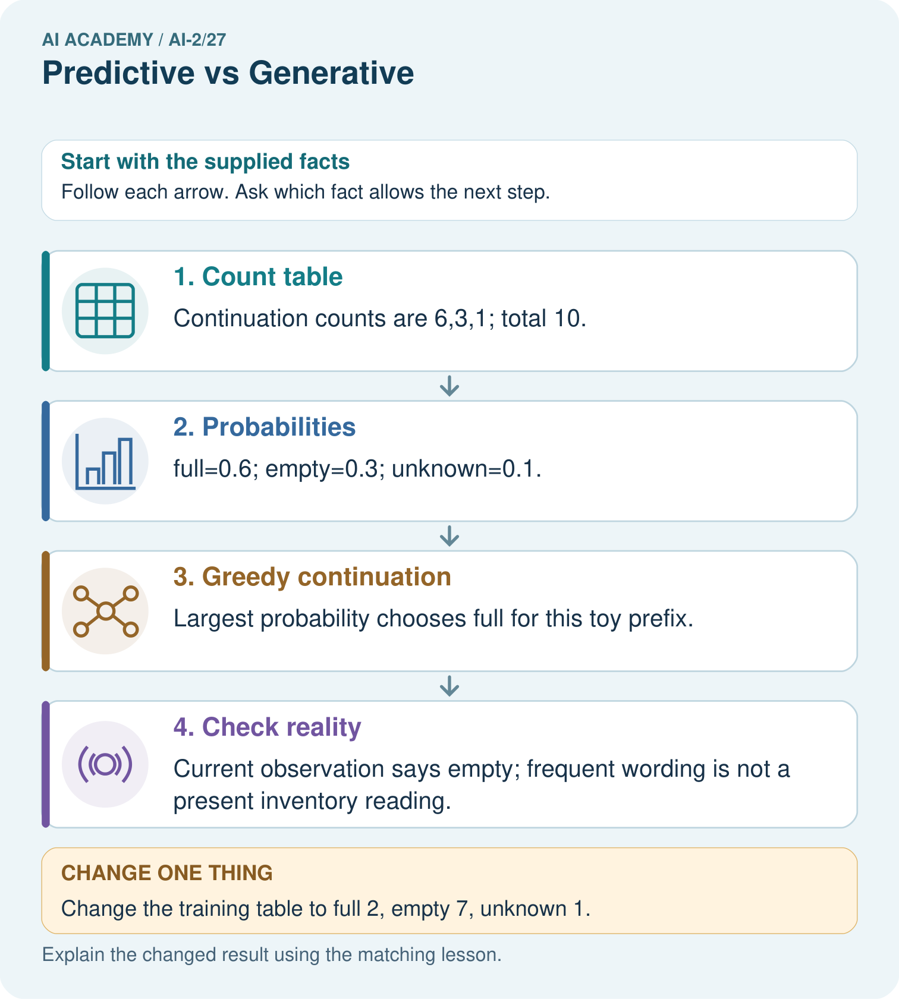
Read the picture one step at a time
Why this result follows
The table predicts a continuation in a text exercise, not the contents of the current box. Generating the most frequent token is a model-defined decision. A factual inventory statement needs current evidence. The numerical table is intentionally small; real generative systems condition on richer context and do not simply consult these three counts.
What this example does not establish
A one-step toy distribution does not describe every predictive or generative model or validate factual accuracy.
Student lesson · 7 of 14
Find and repair a mistake
ERROR DETECTIVE
Compare → Diagnose → Repair
Do not patch the answer. Find the earliest unsupported assumption, wrong step, or weak evidence.
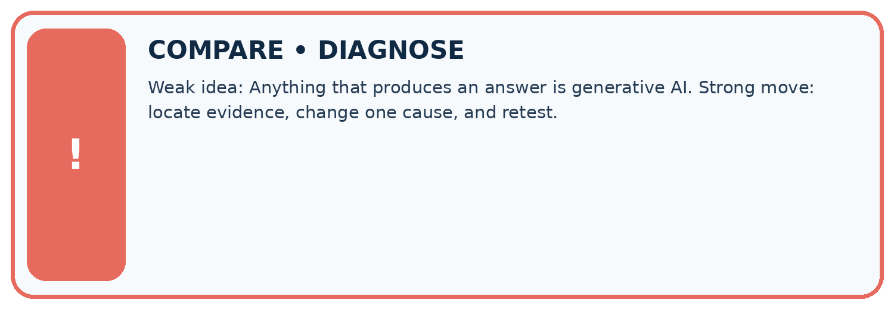
| Evidence record | Expected | Actual | Likely cause / next test |
|---|---|---|---|
| normal case | works | ||
| boundary case | stated rule | ||
| missing input | safe response | ||
| fresh transfer | generalizes |
Repair one cause. Why is this repair better than changing several things?
A closer explanation
Keep three questions separate: did the model fit continuation data; did the output satisfy the requested format or task; and are factual claims supported? A system that drafts a fictional description has different criteria from one reporting a live measurement. Record the source and time when a claim refers to changing conditions. No AI account is needed to reason about these distinctions.
Student lesson · 8 of 14
Practise together
LOGIC STUDIO
Trace Before You Run
Block code, pseudocode, tables, and diagrams are different ways to expose the same reasoning.

SET evidence_record PREDICT expected_result RUN one normal case and one boundary case COMPARE actual_result with expected_result IF different: locate first cause; change one factor; RETEST EXPLAIN result, limitation, and next safe step
Trace one input. Which line changes the state or chooses a path?
A closer explanation
Supported case: the prefix “The door is” is followed in a tiny corpus by open four times and closed once. The empirical probabilities are 4/5 and 1/5. A current sensor reports closed. Selecting the most frequent continuation open would be plausible under the corpus model but inconsistent with the sensor observation.
Practise with less help: Compute the distribution
Use workbook W2 for the connected example “Generative and predictive objectives”. First fill the input and rule boxes. Try the middle steps before asking for a hint. After a hint, try the next step yourself.
| Plan | Do | Check |
|---|---|---|
| What is given? Which rule or procedure applies? | Record each intermediate step. | Does the result follow? What remains unknown? |
Explain your trace to a partner. Your partner points to one step to check. Swap roles on the next case. Each person writes their own explanation.
Check your reasoning
Use the worked case for Generative and predictive objectives. Proposed explanation: “Generative models do not predict”. Decide whether this explanation is supported. Point to the step or supplied fact that decides; explain your repair if needed.
Answer on your own before discussion. If you are unsure, say which step you need help with.
Explain the picture
Does matching the physical box in the changed table prove the generator measures boxes?
This is supported practice. Keep the separately named independent case for an attempt before feedback.
Student lesson · 9 of 14
Run the investigation
EVIDENCE LAB
Predict → Test → Record → Explain
Keep expected and actual results separate. Surprises are useful data when recorded honestly.
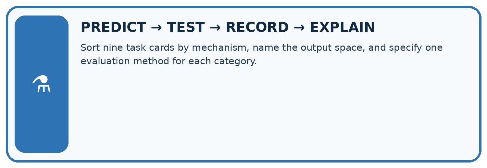
Sort nine task cards by mechanism, name the output space, and specify one evaluation method for each category.
| Test / input | Prediction | Actual | Evidence / calculation | Change or keep? |
|---|---|---|---|---|
| normal | ||||
| boundary | ||||
| missing | ||||
| fresh transfer |
What did the hardest test teach you that the normal test did not?
Plan → try → check
Before trying: what do I expect, and why? While trying: which step could first go wrong? Afterwards: what did I actually observe, and what should change? Keep “not run” if you only traced the procedure.
Student lesson · 10 of 14
Build your understanding
MASTERY
From Knowing the Word to Owning the Idea
Move upward only when you can produce evidence without copying the worked example.

1 • NAME: Define the concept without repeating the textbook.
2 • TRACE: Show the information, state, branch, calculation, or evidence path.
3 • APPLY: Solve a different example independently.
4 • CHALLENGE: Find a boundary case, counterexample, or unfair outcome.
5 • EXPLAIN LIMITS: Say when the result should not be trusted or used alone.
My strongest evidence of independent understanding:
Student lesson · 11 of 14
Connect your project
CUMULATIVE PROJECT
Transparent Book Recommender
Every week adds one inspectable piece. The system must show how it reached a result.
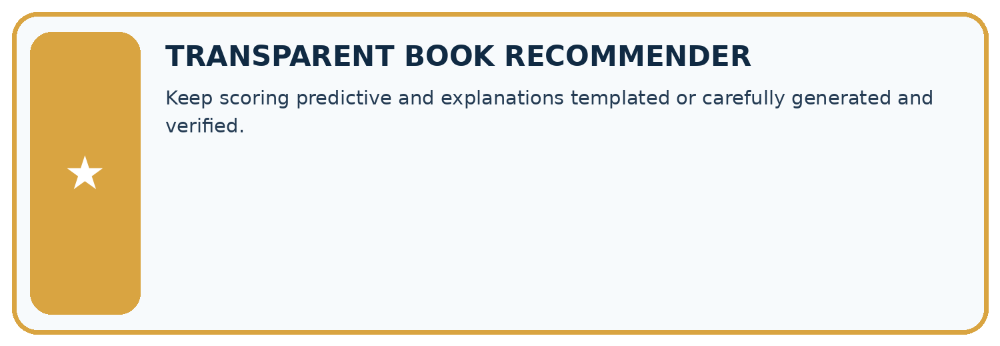
THIS WEEK’S CHECKPOINT Keep scoring predictive and explanations templated or carefully generated and verified.
SYSTEM MAP Reader need → allowed inputs → transparent rule or score → ranked candidates → explanation → test record → human decision
What will you add, change, or verify in the project this week?
What should remain under human control?
RESPONSIBLE DESIGN Collect only necessary information. Show uncertainty and limits. Never confuse a ranking with a fact about a person.
Evidence for your project
Use approved book facts for recommender explanations; generated fluency is not a replacement for catalogue evidence.
Student lesson · 12 of 14
Show what you know
INDEPENDENT MASTERY PROOF
Explain • Transfer • Test • Defend
Complete this page without copying the worked example. Your reasoning matters more than decoration.
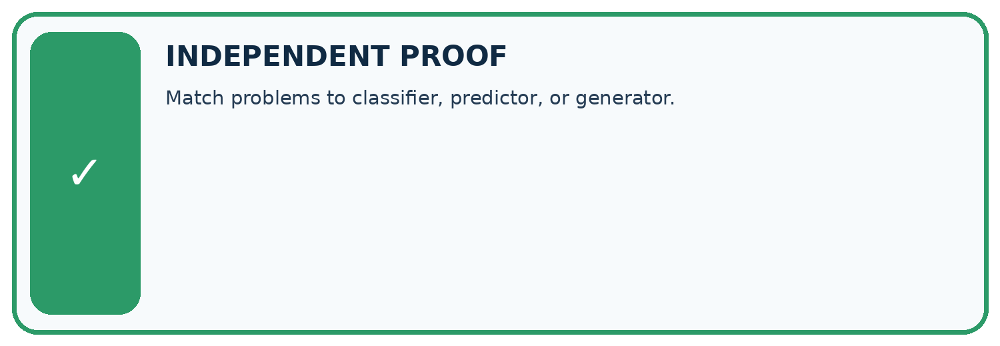
CHALLENGE Match problems to classifier, predictor, or generator.
1. My fresh example, trace, calculation, or design:
2. My evidence that it works (include a boundary or missing-data case):
3. One limitation, fairness concern, or situation needing human review:
SELF-CHECK □ I explained the mechanism □ I used evidence □ I tested a fresh case □ I named a limitation □ I can answer ‘why?’
Student lesson · 13 of 14
Study a complete case
Week 27 Worked case
Use the supplied details to practise the weekly concept before attempting the independent question. This case extends the illustrated lesson.
The situation
A labels genre; B writes a new blurb; C computes 24/6.
The question
Distinguish operations.
Worked explanation
A predicts a category, B generates text, C calculates 4. Products may combine them.
Explain it in your own words
Which detail supports the answer, and why does it matter?
Trace the supplied case visually
Three operations in one book helper
| Evidence or stage | Value or result |
|---|---|
| Classify | Select a genre label |
| Generate | Write a new blurb |
| Calculate | 24 divided by 6 equals 4 |
A labels genre; B writes a new blurb; C computes 24/6.
Distinguish operations.
A predicts a category, B generates text, C calculates 4. Products may combine them.
Student lesson · 14 of 14
Try a new case independently
Independent case: Analyse a new corpus independently
For prefix The signal is, counts are high 2, low 5, unknown 3. Compute all probabilities and the most frequent continuation. A current measurement reports high. State what the most frequent continuation does and does not establish.
Attempt this case before feedback. Record any help. Earlier examples below are further practice; a case already practised with feedback cannot establish fresh transfer.
Week 27 Independent application
Close the worked explanation. Apply the idea to this different question without copying.
One model labels a review positive or negative; another writes a new review. Which classifies and which generates? Must generated text be true?
My answer, with a trace, calculation or supporting evidence
Create and test
Change one relevant detail. Predict the result before testing. Include a boundary or missing-information case when it helps reveal a limit.
My changed input and expected result
Connect to your project
Keep scoring predictive and explanations templated or carefully generated and verified.
The evidence I will keep
Your teacher has the independent answer and scoring criteria. Complete the matching workbook week to keep your practice evidence together.
Transfer practice from the original programme
A tool retrieves a book description, predicts a genre, then writes a new blurb. Identify each operation and give one distinct failure to check at each stage.
Use feedback to improve
Attempt the independent case before hints. Record whether you worked alone, used a hint or followed a model. After feedback, fix the first unsupported step and explain why it changed. A later check uses a changed case, not a copied answer.